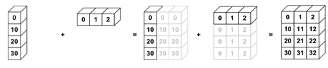

Parallelisation¶

import sys
IN_COLAB = 'google.colab' in sys.modules
if IN_COLAB:
!pip install dask[dataframe] joblib ray
What is it?¶
Parallelisation divides a large problem into many smaller ones and solves them simultaneously.
Divides up the time/space complexity across workers.
Tasks centrally managed by a scheduler.
Multi-processing (cores)
Useful for compute-bound problems.
Overcomes the Global Interpreter Lock, GIL (prevents running the bytecode on mutliple threads simutaneously).
Lower performance when need to exchange/aggregate data
Multi-threading (parts of processes)
Useful for memory-bound problems.
Parallelised code often introduces overheads. So, the speed-up benefits are more pronounced with bigger jobs, rather than some of the small examples used in this tutorial.
Parallelising a Python?¶
Python itself is not designed for massive scalability and controls threads preemptively using the GIL. This has lead many libraries to work around this using C/C++ backends.
Some options include:
multiprocessing for creating a pool of asynchronous workers.
from multiprocessing import Pool
def my_function(x):
return x * x
with Pool(3) as workers:
print(workers.map(my_function, [1, 2, 3]))
[1, 4, 9]
joblib for creating lightweight pipelines that help with “embaressingly parallel” tasks.
import joblib
import math
joblib.Parallel(n_jobs=1)(
joblib.delayed(math.sqrt)(i**2) for i in range(10)
)
[0.0, 1.0, 2.0, 3.0, 4.0, 5.0, 6.0, 7.0, 8.0, 9.0]
asyncio for concurrent programs, especially ones that are IO-bound.
import asyncio
async def main():
print('Hello ...')
await asyncio.sleep(1)
print('... World!')
asyncio.run(main())
These options work well for the CPU cores on your machine, though not really beyond that.
Vectorisation¶
Vectors effectively “parallelise” the code by operating on multiple array elements at once, rather than looping through them one at a time.
Under the hood for NumPy arrays, functions, and aggregations (e.g., mean, sum).
import numpy as np
nums = np.arange(1_000_000)
%%timeit
[num + 2 for num in nums]
187 ms ± 242 µs per loop (mean ± std. dev. of 7 runs, 10 loops each)
%%timeit
nums + 2 # adds 2 to every elements by overloading the +
621 µs ± 2.09 µs per loop (mean ± std. dev. of 7 runs, 1000 loops each)
%%timeit
np.add(nums, 2)
654 µs ± 3.16 µs per loop (mean ± std. dev. of 7 runs, 1000 loops each)
Broadcasting (operations with different shaped arrays, NumPy, xarray).

nums_col = np.array([0, 10, 20, 30]).reshape(4, 1)
nums_row = np.array([0, 1, 2])
nums_col + nums_row
array([[ 0, 1, 2],
[10, 11, 12],
[20, 21, 22],
[30, 31, 32]])
import xarray as xr
nums_col = xr.DataArray([0, 10, 20, 30], [('col', [0, 10, 20, 30])])
nums_row = xr.DataArray([0, 1, 2], [('row', [0, 1, 2])])
nums_col + nums_row
<xarray.DataArray (col: 4, row: 3)>
array([[ 0, 1, 2],
[10, 11, 12],
[20, 21, 22],
[30, 31, 32]])
Coordinates:
* col (col) int64 0 10 20 30
* row (row) int64 0 1 2- col: 4
- row: 3
- 0 1 2 10 11 12 20 21 22 30 31 32
array([[ 0, 1, 2], [10, 11, 12], [20, 21, 22], [30, 31, 32]]) - col(col)int640 10 20 30
array([ 0, 10, 20, 30])
- row(row)int640 1 2
array([0, 1, 2])
NumPy ufuncs (universal functions).
Optimised in C (statically typed and compiled).
Arbitrary Python function to NumPy ufunc:
np.vectorize(keeps the documentation).
random_array = np.random.rand(5, 5)
random_array
array([[0.81308509, 0.96200446, 0.39567308, 0.0662487 , 0.40081964],
[0.58566485, 0.18898851, 0.78103425, 0.99337791, 0.52087693],
[0.65851103, 0.22234131, 0.62499694, 0.59954768, 0.02451182],
[0.64885859, 0.34026717, 0.03809739, 0.21586453, 0.99622733],
[0.34141034, 0.70332816, 0.70923459, 0.42470152, 0.91011455]])
def my_function(array, threshold):
"""Compare an array to a threshold."""
if array > threshold:
return round(array - threshold, 1)
else:
return round(array + threshold, 1)
frompyfunc_function = np.frompyfunc(
my_function,
2, # number of input arguments
1) # number of returned objects
frompyfunc_function(random_array, 0.5)
array([[0.3, 0.5, 0.9, 0.6, 0.9],
[0.1, 0.7, 0.3, 0.5, 0.0],
[0.2, 0.7, 0.1, 0.1, 0.5],
[0.1, 0.8, 0.5, 0.7, 0.5],
[0.8, 0.2, 0.2, 0.9, 0.4]], dtype=object)
frompyfunc_function.__doc__
"my_function (vectorized)(x1, x2, /, out=None, *, where=True, casting='same_kind', order='K', dtype=None, subok=True[, signature, extobj])\n\ndynamic ufunc based on a python function"
vectorized_function = np.vectorize(my_function)
vectorized_function(random_array, 0.5)
array([[0.3, 0.5, 0.9, 0.6, 0.9],
[0.1, 0.7, 0.3, 0.5, 0. ],
[0.2, 0.7, 0.1, 0.1, 0.5],
[0.1, 0.8, 0.5, 0.7, 0.5],
[0.8, 0.2, 0.2, 0.9, 0.4]])
vectorized_function.__doc__
'Compare an array to a threshold.'
Dask¶
Great features.
Helpful documentation.
Familiar API.
Under the hood for many libraries e.g. xarray, iris, scikit-learn.
Single machine¶
See the excellent video from Dask creator, Matthew Rocklin, below.
if not IN_COLAB:
from dask.distributed import Client
client = Client()
client
If want multiple threads, then could use keyword arguments in Client instance:
client = Client(processes=False, threads_per_worker=4, n_workers=1)
Remember (important), always need to close down the client at the end:
client.close()
Dask behind the scenes¶
import xarray as xr
ds = xr.tutorial.open_dataset(
'air_temperature',
chunks={'time': 'auto'} # dask chunks
)
ds_mean = ds.mean()
ds_mean # a dask.array (an unexecuted task graph)
<xarray.Dataset>
Dimensions: ()
Data variables:
air float32 dask.array<chunksize=(), meta=np.ndarray>- air()float32dask.array<chunksize=(), meta=np.ndarray>
Array Chunk Bytes 4 B 4.0 B Shape () () Count 4 Tasks 1 Chunks Type float32 numpy.ndarray
ds_mean.compute()
<xarray.Dataset>
Dimensions: ()
Data variables:
air float32 281.3- air()float32281.3
array(281.25513, dtype=float32)
ds.close()
dask.array (NumPy)¶
See the excellent video from Dask creator, Matthew Rocklin, below.
import dask.array as da
my_array = da.random.random(
(5_000, 5_000),
chunks=(500, 500) # dask chunks
)
result = my_array + my_array.T
result
|
if not IN_COLAB:
result.compute()
dask.dataframe (Pandas)¶
See the excellent video from Dask creator, Matthew Rocklin, below.
import dask
df = dask.datasets.timeseries()
df
| id | name | x | y | |
|---|---|---|---|---|
| npartitions=30 | ||||
| 2000-01-01 | int64 | object | float64 | float64 |
| 2000-01-02 | ... | ... | ... | ... |
| ... | ... | ... | ... | ... |
| 2000-01-30 | ... | ... | ... | ... |
| 2000-01-31 | ... | ... | ... | ... |
type(df)
dask.dataframe.core.DataFrame
result = df.groupby('name').x.std()
result
Dask Series Structure:
npartitions=1
float64
...
Name: x, dtype: float64
Dask Name: sqrt, 67 tasks
# result.visualize()
result_computed = result.compute()
type(result_computed)
pandas.core.series.Series
dask.bag¶
Iterate over a bag of independent objects (embarrassingly parallel).
import numpy as np
import dask.bag as db
nums = np.random.randint(low=0, high=100, size=(5_000))
nums
array([15, 43, 73, ..., 53, 25, 86])
def function(nums):
return chr(nums)
if not IN_COLAB:
bag = db.from_sequence(nums)
bag = bag.map(function)
result = bag.compute()
client.close()
Dask on HPC¶
Create/edit the
dask_on_hpc.pyfile.Submit to the queue using
qsub dask_on_hpc.bash.
If need to share memory across chunks:
Use shared memory (commonly OpenMP, Open Multi-Processing).
-pe smp npon ARC4
Otherwise:
Use message passing interface, MPI (commonly OpenMPI).
-pe ib npon ARC4
Ray¶
Ray will automatically detect the available GPUs and CPUs on the machine.
Can also specify required resources.
First, initialise Ray.
import ray
ray.init()
{'node_ip_address': '10.1.0.250',
'raylet_ip_address': '10.1.0.250',
'redis_address': '10.1.0.250:6379',
'object_store_address': '/tmp/ray/session_2022-01-17_20-30-38_743190_3813/sockets/plasma_store',
'raylet_socket_name': '/tmp/ray/session_2022-01-17_20-30-38_743190_3813/sockets/raylet',
'webui_url': None,
'session_dir': '/tmp/ray/session_2022-01-17_20-30-38_743190_3813',
'metrics_export_port': 56420,
'node_id': '6bcf261dd8010d22a578b3886f83faf91ca3a2c5c654df308a3711f5'}
Functions become Tasks¶
Parallelise functions by adding
@ray.remotedecoratorThen instead of calling it normally, use the
.remote()methodThis yields a future object reference that you can retrieve with
ray.get(object)
@ray.remote
def f(x):
return x * x
# asynchronously run a task
futures = [f.remote(i) for i in range(4)]
print(ray.get(futures))
[0, 1, 4, 9]
Classes become Actors¶
Parallelise classes the same way
These actors maintain their internal state
@ray.remote
class Counter(object):
def __init__(self):
self.value = 0
def increment(self):
self.value += 1
def read(self):
return self.value
# construct an actor instance using .remote()
counters = [Counter.remote() for i in range(4)]
# asynchronously run actor methods
[counter.increment.remote() for counter in counters]
futures = [counter.read.remote() for counter in counters]
print(ray.get(futures))
[1, 1, 1, 1]
Other key API methods:
ray.put()Put a value in the distributed object store.
put_id = ray.put(my_object)
ray.get()Get an object from the distributed object store, either placed there by
ray.put()explicitly or by a task or actor method, blocking until object is available.thing = ray.get(put_id)
ray.wait()Wait on a list of ids until one of the corresponding objects is available (e.g., the task completes). Return two lists, one with ids for the available objects and the other with ids for the still-running tasks or method calls.
finished, running = ray.wait([train_id, track_id])
Ray’s multiprocessing¶
To scale beyond one machine and generally manage a pool of processes.
Replace:
from multiprocessing.pool import Pool
With:
from ray.util.multiprocessing.pool import Pool
from ray.util.multiprocessing.pool import Pool
def my_function(x):
return x * x
with Pool(2) as workers:
print(workers.map(my_function, [1, 2, 3]))
[1, 4, 9]
Ray’s joblib¶
The underpinnings of scikit-learn, which Ray can scale to a cluster.
Import and instantiate register_ray, which registers Ray as a joblib backend for scikit-learn:
import joblib
from ray.util.joblib import register_ray
register_ray()
Then run your original scikit-learn code within a Ray/joblib backend:
with joblib.parallel_backend('ray'):
# original scikit-learn code
For example, here’s some parallel hyperparameter tuning:
import joblib
from ray.util.joblib import register_ray
register_ray()
import numpy as np
from sklearn.datasets import load_digits
from sklearn.svm import SVC
from sklearn.model_selection import RandomizedSearchCV
digits = load_digits()
param_space = {
'C': np.logspace(-6, 6, 30),
'gamma': np.logspace(-8, 8, 30),
'tol': np.logspace(-4, -1, 30),
'class_weight': [None, 'balanced'],
}
model = SVC(kernel='rbf')
search = sklearn.model_selection.RandomizedSearchCV(
model, param_space, cv=5, n_iter=300, verbose=10)
with joblib.parallel_backend('ray'):
search.fit(digits.data, digits.target)
When finished, remember to shut down the Ray connection.
ray.shutdown()
Please see this repository for examples of how to do distributed deep learning using Ray Train with TensorFlow, PyTorch, and Horovod.
Dask on Ray¶
Use Ray as a backend for Dask tasks.
Dask dispatches tasks to Ray for scheduling and execution.
import ray
import dask
import dask.dataframe as dd
import pandas as pd
import numpy as np
from ray.util.dask import ray_dask_get
dask.config.set(scheduler=ray_dask_get)
ray.init()
{'node_ip_address': '10.1.0.250',
'raylet_ip_address': '10.1.0.250',
'redis_address': '10.1.0.250:6379',
'object_store_address': '/tmp/ray/session_2022-01-17_20-30-43_268363_3813/sockets/plasma_store',
'raylet_socket_name': '/tmp/ray/session_2022-01-17_20-30-43_268363_3813/sockets/raylet',
'webui_url': None,
'session_dir': '/tmp/ray/session_2022-01-17_20-30-43_268363_3813',
'metrics_export_port': 45706,
'node_id': 'b62298650bf89d9199c572c8aa82b21b6722c4bc358385382723d827'}
df = pd.DataFrame(np.random.randint(0, 100, size=(2**10, 2**8)))
df = dd.from_pandas(df, npartitions=10)
df.head(10)
| 0 | 1 | 2 | 3 | 4 | 5 | 6 | 7 | 8 | 9 | ... | 246 | 247 | 248 | 249 | 250 | 251 | 252 | 253 | 254 | 255 | |
|---|---|---|---|---|---|---|---|---|---|---|---|---|---|---|---|---|---|---|---|---|---|
| 0 | 79 | 0 | 67 | 50 | 76 | 35 | 14 | 99 | 69 | 83 | ... | 81 | 77 | 82 | 73 | 17 | 97 | 25 | 28 | 15 | 93 |
| 1 | 20 | 28 | 30 | 92 | 4 | 63 | 43 | 42 | 55 | 43 | ... | 8 | 54 | 10 | 56 | 6 | 88 | 34 | 82 | 86 | 34 |
| 2 | 33 | 45 | 17 | 75 | 95 | 20 | 46 | 80 | 82 | 72 | ... | 81 | 56 | 22 | 16 | 55 | 72 | 46 | 15 | 99 | 86 |
| 3 | 24 | 88 | 28 | 60 | 37 | 95 | 90 | 62 | 47 | 11 | ... | 59 | 27 | 84 | 62 | 39 | 41 | 28 | 74 | 9 | 83 |
| 4 | 9 | 40 | 12 | 14 | 20 | 27 | 58 | 89 | 87 | 98 | ... | 22 | 99 | 76 | 53 | 26 | 94 | 78 | 25 | 97 | 38 |
| 5 | 68 | 87 | 44 | 61 | 83 | 73 | 25 | 79 | 33 | 33 | ... | 51 | 68 | 85 | 34 | 24 | 39 | 89 | 26 | 78 | 37 |
| 6 | 18 | 54 | 9 | 44 | 28 | 74 | 55 | 89 | 55 | 36 | ... | 1 | 1 | 42 | 36 | 46 | 75 | 99 | 15 | 17 | 5 |
| 7 | 58 | 27 | 49 | 78 | 40 | 34 | 2 | 5 | 17 | 71 | ... | 88 | 76 | 46 | 91 | 78 | 8 | 32 | 87 | 95 | 68 |
| 8 | 30 | 91 | 87 | 68 | 19 | 93 | 43 | 66 | 18 | 70 | ... | 90 | 39 | 58 | 20 | 81 | 88 | 50 | 64 | 94 | 72 |
| 9 | 47 | 83 | 36 | 13 | 4 | 71 | 6 | 85 | 40 | 78 | ... | 80 | 8 | 11 | 3 | 6 | 11 | 41 | 44 | 93 | 1 |
10 rows × 256 columns
ray.shutdown()
Modin¶
Modin uses Ray or Dask to easily speed up your Pandas code.
To use Modin, simply replace the import and use Pandas API as normal.
import os
os.environ['MODIN_ENGINE'] = 'ray'
# os.environ['MODIN_ENGINE'] = 'dask'
if not IN_COLAB:
# import pandas as pd
import modin.pandas as pd
frame_data = np.random.randint(0, 100, size=(5_000, 1_000))
df = pd.DataFrame(frame_data)
df.head(10)
UserWarning: Ray execution environment not yet initialized. Initializing...
To remove this warning, run the following python code before doing dataframe operations:
import ray
ray.init()
UserWarning: Distributing <class 'numpy.ndarray'> object. This may take some time.
Mars¶
Mars is a tensor-based unified framework for large-scale data computation which scales numpy, pandas, scikit-learn and many other libraries.
Swap out the library import, use the same API, and add .execute().
import mars
mars.new_session()
Mars Tensor for NumPy¶
# import numpy as np
# np.random.rand(10)
import mars.tensor as mt
mt.random.rand(10).execute()
Mars DataFrame for Pandas¶
# import pandas as pd
# df = pd.DataFrame(
# np.random.rand(10),
# columns=['random_numbers']
# )
import mars.dataframe as md
df = md.DataFrame(
np.random.rand(10),
columns=['random_numbers']
).execute()
And remember to stop the server when you’re finished.
mars.stop_server()
Mars can also use Ray as the backend (instructions).
Further information¶
Spark on Ray: RayDP combines your Spark and Ray clusters, making it easy to do large scale data processing using the PySpark API and seemlessly use that data to train your models using TensorFlow and PyTorch.
Concurrency can also run different tasks together, but work is not done at the same time (concurrency from the ground up).
Asynchronous (multi-threading), useful for massive scaling, threads controlled explicitly.